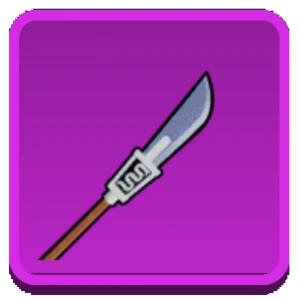

с 1% шансом випадет бисенто
;если у вас єсть Бисэнто то если убитить Белоуса то Бисэнто станет V2
Описание Бисэнто
1 способность Бисэнто за 80мастерства запускает 3 ветряних удара
2 способность Бисэнто за 150мастерства запускает прозрачний шар которим много урона наносит
Фрукт дрожи или Гура Гура но Ми
Значение:Звук тряски
фото:
.jpg) ;
;
Ооооооооочень сильний фрукт в аниме
он с него не падает он его использует
второй мир враг БелоусаТакже он использует Плащь Адмириала
.webp) ;
;